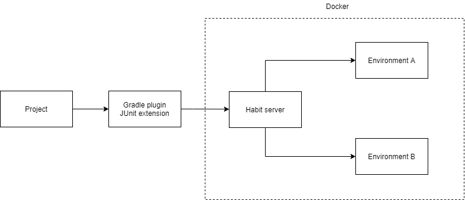
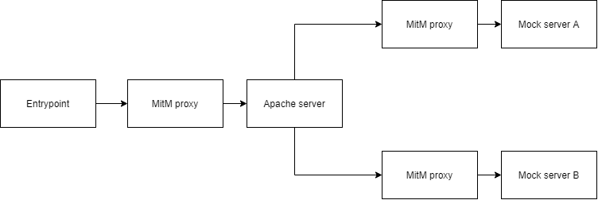

Architecture
Habit has been designed to work in server-client model where server is responsible for creating the testing environment and routing test requests to the correct one.

Currently there are two Java-based clients available:
-
JUnit extension - automated tests execution
-
Gradle plugin - manual / exploratory testing
Environment
Each environment consists of:
-
entrypoint - small server executing test requests and collecting information when processing is done
-
one or more Apache servers - real servers containing configuration from the source project
-
zero or more mock servers - dummy servers representing target hosts to which requests are forwarded based on rewrite rules
-
MitM proxy for every hostname - to intercept exchanges and persist their details for later verification
